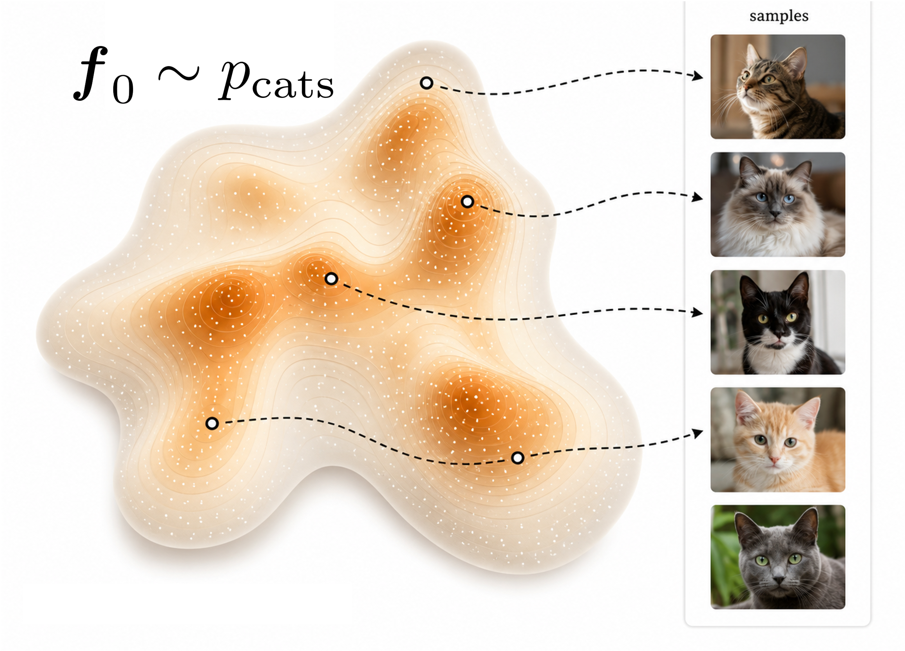
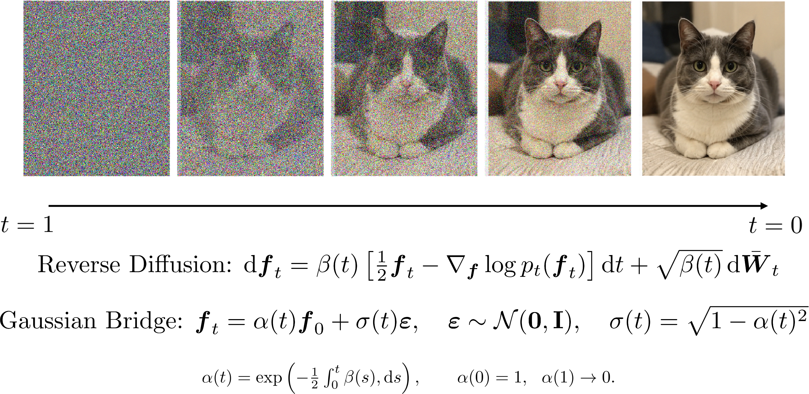
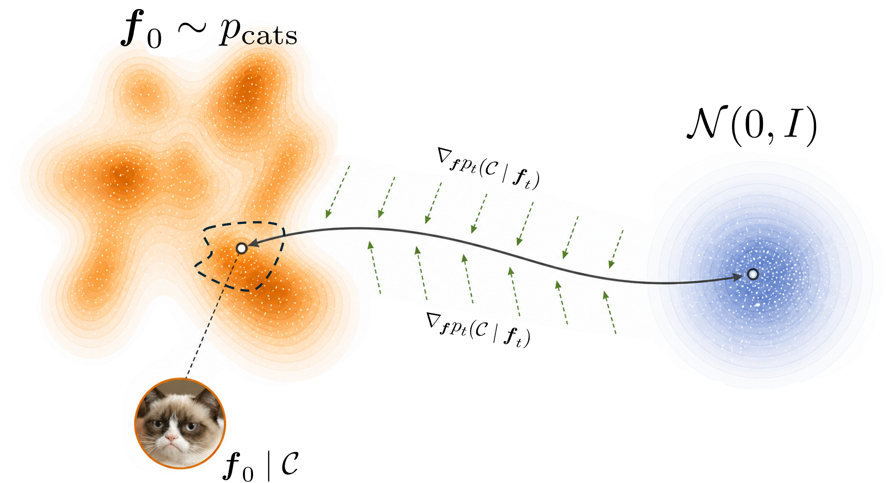
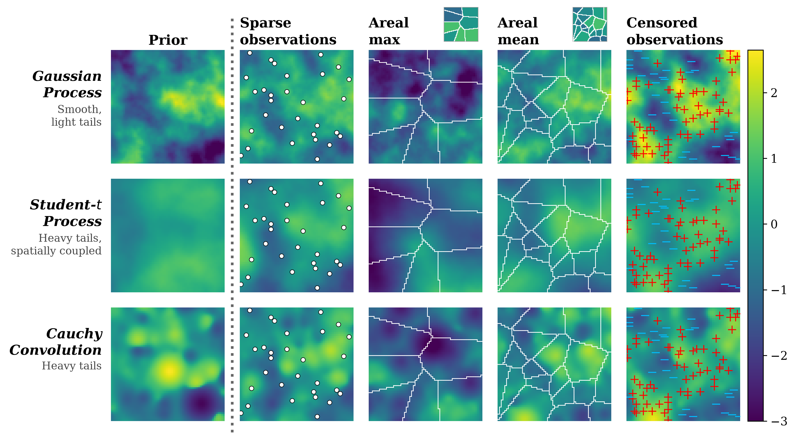
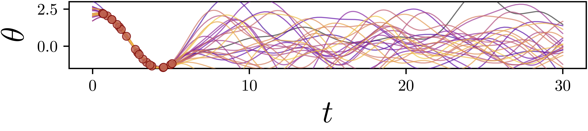
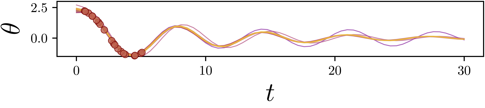

Physically Coherent ML for Probabilistic Field Reconstruction
Diffusion models without neural networks
UNSW Sydney | STREAM
Conditioning simulations
- Assume a process model \(f\) you can simulate from with relative ease. Call \(f\) a stochastic process
- We care about runs the other way, and ask the model to agree with some information \(\mathcal{C}\):
- sparse, indirect, or areal observations;
- additional physical laws the field has to satisfy;
- a shape the field has to have, such as monotone, bounded, or non-negative.
- Outside the linear-Gaussian case this can be very difficult.
We want \(p(f \mid \mathcal{C})\) without a new derivation for every new \(\mathcal{C}\).
All cats are stochastic processes

Diffusion modelling asks “how do I sample from an inconvenient distribution?”
Noising a cat

Reversing a cat
Anderson (1982) showed the time reversal is also an SDE, requiring, in addition to the forward one, the score, \(\nabla_{\boldsymbol{f}} \log p_t\).

Anderson (1982), Reverse-time diffusion equation models, Stochastic Processes and their Applications 12(3):313–326.
Diffusion models in machine learning?
- For cats, \(\nabla_\boldsymbol{f} \log p_t\) is unknown, so a diffusion model learns it by fitting a network \(s_\theta(\boldsymbol{f}, t)\):
- find a few hundred million photographs of cats;
- noise every one of them along the forward process;
- train \(s_\theta(\boldsymbol{f}, t) \approx \nabla_\boldsymbol{f} \log p_t\) on the pairs;
- sample by pushing white noise through the reverse SDE.
- That is the whole machine-learning content. Everything else is stochastic calculus.
The neural network exists only because nobody knows \(\nabla_\boldsymbol{f} \log p_t\) for cats.
But if we can already simulate from \(f\)…
… then we already implicitly have \(\nabla_\boldsymbol{f} \log p_t\).
- A draw from the process is a deterministic map of simple noise, \[ \boldsymbol{f}_0 = T_\vartheta(\boldsymbol{\xi}_0), \qquad T_\vartheta : \mathbb{R}^{m} \to \mathbb{R}^{d}, \qquad \boldsymbol{\xi}_0 \sim \mathcal{N}(\boldsymbol{0}, \mathbf{I}_m). \]
- For a Gaussian field, \(T_\vartheta\) is the Cholesky factor of the covariance. For an SDE or an SPDE, \(T_\vartheta\) is the solver you already run and \(\boldsymbol{\xi}_0\) are its driving increments.
- Rosenblatt (1952): after discretisation, essentially every process admits such a representation.
How to incorporate information in \(\mathcal{C}\)
We could already simulate from \(f\), so what does this buy us?
Using Bayes: \[ \nabla \log p_t(\boldsymbol{f}_t \mid \mathcal{C}) = \underbrace{\nabla \log p_t(\boldsymbol{f}_t)}_{=\,-\boldsymbol{f}_t\ \text{(exact)}} + \underbrace{\nabla \log p_t(\mathcal{C} \mid \boldsymbol{f}_t)}_{\text{guidance}}. \]
Substitute \(\nabla \log p_t(\boldsymbol{f}_t \mid \mathcal{C})\) into the reverse time SDE and the trajectory bends towards draws that satisfy \(\mathcal{C}\). Machine learning calls this guidance.
This separates the process and the conditioning information.
Guidance is just Bayes

Spatial fields, awkward observations

Spatio-temporal SPDEs
Physics as conditioning information
OI/GP/Kriging conditioned on the observations alone

Conditioned on the observations and on non-linear damped pendulum equation

Error, approximations & computation
| Error source | For cats | For us | |
|---|---|---|---|
| 1 | Process simulation \(\nabla\log p_t\) | uncontrolled | exact |
| 2 | Guidance approximation | uncontrolled | explicit; \(\mathcal{O}(S^{-1})\) bias |
| 3 | Discretisation | controllable | solver order \(h^q\), same bound |
- Per sample: one reverse-SDE solve (no mixing time or training)
- Parallelises trivially (all shown examples are milliseconds to a few seconds each, on a CPU)
We are not cheapening a hard computation. This will not somehow make computationally prohibitive processes (with respect to process sampling) easier.
Questions?
Slides and code: astfalckl.github.io/presentations
STREAM: unsw.edu.au/science/our-schools/maths/our-research/stream
l.astfalck@unsw.edu.au
Moss\(^*\), Astfalck\(^*\), …, Zammit-Mangion, Conditioning Gaussian Processes on Almost Anything, arXiv:2605.21041
Sharrock, Astfalck, Moss, LatentFlow: A General Framework for Conditioning Stochastic Processes, arXiv:2607.12922
Lachlan Astfalck | UNSW Spatio-Temporal Research for Environmental Analysis and Modelling